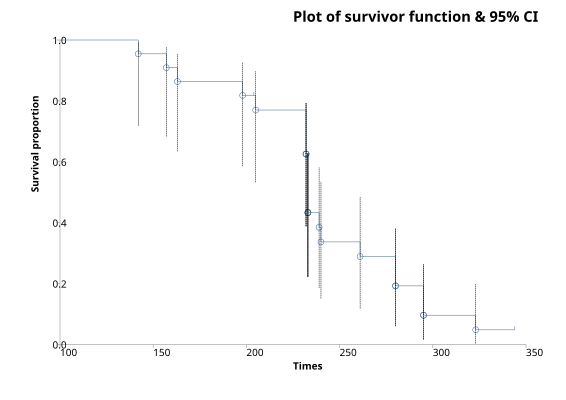

Survival (Kaplan-Meier) Plot
Menu location: Graphics_Survival.
This provides a step plot for displaying survival curves. It is intended for use with variables for Time on the x (horizontal) axis and S (the Kaplan-Meier product limit estimate of survival / survivor function) on the Y (vertical) axis. You can display multiple series, each with a different marker style. Confidence intervals for S can be displayed.
Note that censored times are marked with a small vertical tick on the survival curve.
This is a good accompaniment to a presentation of survival analysis that compares survival (or time to event) data in different groups. See Kaplan-Meier for more information on generating S.

Example
Test workbook (Survival worksheet: Group Surv, Time Surv, Censor Surv).
Consider the survival times of two groups of rats given different pre-treatments, the data of the Kaplan-Meier example: 22 rats in group 2 and 19 in group 1, with two censored times in each group. The survival plot takes S, the Kaplan-Meier estimate of the survival proportion at each time, from a worksheet column, with its confidence limits if they are to be shown, so the estimates must first be saved to the worksheet.
To draw this plot in StatsDirect open the test workbook using the file open function of the file menu. Then select Kaplan-Meier from the Survival Analysis section of the Analysis menu, select the column marked "Group Surv" when asked for the group identifier, "Time Surv" when asked for times and "Censor Surv" when asked for deaths/events, and click on Yes when asked whether to save the estimates and confidence intervals to the workbook. This writes ten columns for each group to the worksheet: Time, Death/Event, Survival Proportion (S), Approx. SE(S), 95% LCI S, 95% UCI S and the same four for the cumulative hazard, each titled with its group number, with a row for each subject in time order. The groups are numbered in the order in which they first occur in the group column, so here group 1 is Group Surv 2 (the group of the first row) and group 2 is Group Surv 1. Then select Survival from the Graphics menu, enter 2 as the number of groups and, for each group in turn, select its "Time" column when asked for times, its "Death/Event" column for censorship/death/event, its "Survival Proportion (S)" column for the survival proportion and its "95% LCI S" and "95% UCI S" columns for the lower and upper confidence limits (cancel the confidence limits to draw the curves alone).
For this example:
The chart, titled Survival plot, draws each group's S as a step function that starts at 1 on the left of the X axis, titled Times, and falls at each death time, with a hollow marker at each death (a circle for group 1, a square for group 2) and a small vertical tick at each censored time. The Y axis, titled Survival proportion, runs from 0 to 1. The confidence limits, which the Kaplan-Meier function sets on the log(-log) scale so that they stay between 0 and 1, are drawn as a dashed line from the lower to the upper limit at each death time, and a legend below the chart numbers the groups. The picture above, drawn by an earlier release, shows the curve of Group Surv 2 alone with its confidence limits.
Group Surv = 2: 20 deaths, 2 censored; at time 233 S = 0.433155 (95% CI 0.222686 to 0.627477)
Group Surv = 1: 17 deaths, 2 censored; at time 216 S = 0.473684 (95% CI 0.244377 to 0.672841)
These are the first times at which each curve falls to 0.5 or below, the median survival times of the Kaplan-Meier example (233 and 216). The curve of Group Surv 1 lies below that of Group Surv 2 over most of the follow-up and reaches 0 at 303, its last death, where it has no confidence limits; the curve of Group Surv 2 ends at 0.048128 with the censored time 344. The confidence limits of the two curves overlap widely at every time, so the plot does not show a clear separation of the groups.
This R code reproduces the illustration above. It uses the survival package, which comes with R, and was checked with R 4.6.1. Paste it into R, or save it as a script and run it.
# Survival plot: the StatsDirect help illustration (Kaplan-Meier estimates of survival
# in two groups of rats given different pre-treatments, the Kaplan-Meier example; the
# test workbook's Survival worksheet columns Group Surv, Time Surv and Censor Surv) in R
library(survival)
group <- c(2, 1, 2, 2, 1, 1, 1, 1, 1, 2, 2, 2, 1, 1, 1, 1, 1, 1, 1, 1, 2, 2, 2, 2, 2,
2, 2, 1, 2, 2, 1, 1, 2, 1, 2, 2, 2, 2, 1, 2, 2)
time <- c(142, 143, 157, 163, 165, 188, 188, 190, 192, 198, 204, 205, 206, 208, 212,
216, 216, 220, 227, 230, 232, 232, 232, 233, 233, 233, 233, 235, 239, 240,
244, 246, 261, 265, 280, 280, 295, 295, 303, 323, 344)
event <- c(1, 1, 1, 1, 1, 1, 1, 1, 1, 1, 0, 1, 1, 1, 1, 0, 1, 1, 1, 1, 1, 1, 1, 1, 1,
1, 1, 1, 1, 1, 0, 1, 1, 1, 1, 1, 1, 1, 1, 1, 0) # 1 = death, 0 = censored
# The Kaplan-Meier function of the Analysis menu, asked to save its estimates, writes
# ten columns for each group to the worksheet: Time, Death/Event, Survival Proportion
# (S), Approx. SE(S), 95% LCI S, 95% UCI S and the same four for the hazard, with one
# row for each subject in time order. The groups are numbered in the order in which
# they first occur in the group column, so group 1 of the saved columns is Group Surv
# 2 here. survfit gives the same S (the product limit estimate), and with
# conf.type = "log-log" the same limits: the interval is set on log(-log S), as
# recommended by Kalbfleisch and Prentice, so that it stays between 0 and 1. A row
# where S has reached 0 has no limits.
g <- factor(group, levels = unique(group))
fit <- survfit(Surv(time, event) ~ g, conf.type = "log-log")
print(fit)
# The values the plot takes, one row for each distinct time (the saved columns repeat
# a row for each subject at the same time)
six <- function(x) formatC(x, digits = 6, format = "f", drop0trailing = TRUE)
s <- summary(fit, censored = TRUE)
for (k in levels(s$strata)) {
i <- s$strata == k
cat("\nGroup Surv =", sub("^g=", "", k), "\n")
print(data.frame(Time = s$time[i], Dead = s$n.event[i], Censored = s$n.censor[i],
"Survival Proportion (S)" = six(s$surv[i]),
"95% LCI S" = ifelse(s$surv[i] > 0, six(s$lower[i]), "*"),
"95% UCI S" = ifelse(s$surv[i] > 0, six(s$upper[i]), "*"),
check.names = FALSE), row.names = FALSE)
}
# StatsDirect draws each group's S as a step function that starts at 1 on the left of
# the axis, with a hollow marker at each death time (a circle for group 1, a square
# for group 2), a small vertical tick at each censored time and, when the limits are
# given for every group, a dashed black line from the lower to the upper limit at each
# death time. The X axis is titled Times and the Y axis Survival proportion, from 0 to
# 1; the chart is titled Survival plot and a legend below it numbers the groups. Base
# R's plot of a survfit object starts the steps at time 0; StatsDirect starts them at
# the left end of its X axis, which its autoscale puts at 100 for these times, so xlim
# is set to 100 to 350 to match.
colours <- c("#40699C", "#9E413E")
plot(fit, conf.int = FALSE, mark.time = TRUE, pch = "|", col = colours,
xlim = c(100, 350), xlab = "Times", ylab = "Survival proportion",
main = "Survival plot")
for (k in seq_along(levels(s$strata))) {
i <- s$strata == levels(s$strata)[k] & s$n.event > 0
segments(s$time[i], s$lower[i], s$time[i], s$upper[i], lty = 2)
points(s$time[i], s$surv[i], pch = c(1, 0)[k], col = colours[k])
}
legend("topright", legend = seq_along(levels(s$strata)), pch = c(1, 0), col = colours,
lty = 1, bty = "n")
cat("\nSurvival plot: X axis Times, Y axis Survival proportion (0 to 1)\n")
# What the plot shows at the median survival time of each group, the first time at
# which S is 0.5 or below
for (k in levels(s$strata)) {
i <- which(s$strata == k)
m <- i[which(s$surv[i] <= 0.5)[1]]
cat(sprintf("Group Surv = %s: %d deaths, %d censored; at time %s ",
sub("^g=", "", k), sum(s$n.event[i]), sum(s$n.censor[i]), s$time[m]),
sprintf("S = %s (95%% CI %s to %s)\n", six(s$surv[m]), six(s$lower[m]),
six(s$upper[m])), sep = "")
}